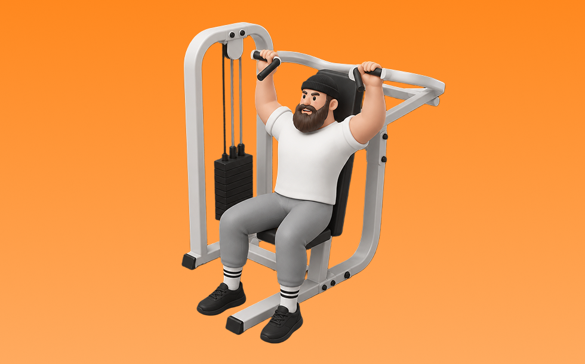

マシンショルダープレス

マシンショルダープレスとは、マシンを使って「押す」動作で肩（三角筋）、腕（上腕三頭筋）を鍛える種目です。軌道が安定して狙った部位に効かせやすいのが特徴で、反動を抑えてコントロールしながら反復します。肩の厚みづくりとオーバーヘッドの押す力の向上が期待できます。
- 対象部位
- 肩
- 器具
- マシン
- 記録形式
- 重量・回数
- 別名
- ショルダープレスマシン
YouTube動画
-
【それNGです】ショルダープレス：4つのエラー動作と改善方法【筋トレ】
-
【肩トレ】全然違う！肩に効かせるショルダープレスの正しいフォーム【新・バズーカ岡田チャンネル】 #バズーカ岡田
-
【横グリップをやめて急成長】IFBB PRO寺島遼が肩だけに効かせるマシンショルダープレスを徹底解説！
-
【迷ったらコレ】肩トレ王道種目「マシンショルダープレス」効かす方法を解説
-
【肩トレ】マシンの使い方 ショルダープレス
-
【ショルダープレス】肩と腰を怪我せずに三角筋を鍛えるフォーム解説
-
【ジムトレ】初心者おすすめ肩トレの基本！ショルダープレスの正しい使い方
-
【どのフォームが正しい？】肩トレで人気のショルダープレス、サイドレイズで気になるポイントを全部解説します【筋トレ】
-
ダンベルショルダープレスのやり方・フォーム | 「肩関節や肘が痛い」「椅子の角度が不明」初心者向け動作説明です！
-
【デカい肩はこれで作れ】肩だけに効かせるショルダープレスのコツを徹底解説します！
-
筋トレ初心者が最初に覚えるべき肩トレのマシン使い方解説【エニタイムフィットネス】
-
【筋トレ解説】ショルダープレスで的確に肩へ効かせる方法と補助種目を伝授します！【三角筋】【前鋸筋】
-
【スミスショルダープレス】やり方ミスると肩ブッ壊す
-
肩を鍛えるオーバーヘッドプレスのやり方【筋トレ】
YouTubeショート
-
マシンショルダープレスの「握り方」による違い #GronG #グロング #筋トレ #フィットネス #ショルダープレス #肩トレ
-
初心者にありがちなミス スミスマシン ショルダープレス🏋️♀️
-
ショルダープレスの常識が変わる、逆座りの衝撃 #筋トレ
-
【肩トレ】スミスマシンショルダープレスのやり方解説
-
No 81映像版すごいジムトレ「マシン・ショルダープレス」①肩の筋肉を鍛えて肩の関節を傷めない正しい方法 #トレーニング #筋トレ #ショルダープレス #ジム #ダイエット #健康
-
ショルダープレスの使い方
-
効かせるショルダープレス
-
マシンでも肩はデカくできる
-
持田選手の肩を痛めないためのショルダープレス。必見です。 #トレーニング #筋トレ #volix #fitness #workout #肩トレ
-
【ショルダープレス】怪我をしない正しいフォーム解説 #shorts
-
マシンショルダープレス3つの超重要ポイント#筋トレ #肩トレ #ショルダープレス #三角筋 #筋肥大
-
今日の肩トレ！#筋トレ大学生 #筋トレ男子 #gymmotivation #fitnessmotivation
-
【1分で分かるマシンの使い方】ショルダープレス編 #Shorts
-
寺島式ショルダープレスのテクニック
-
正しいオーバーヘッドプレス4つのポイント #フィットネス #筋トレ
-
【1分でわかる】ショルダープレスの使い方 #筋トレ #筋肉 #トレーニング #ジム #肩トレ #肩こり
-
ダンベルショルダープレスのコツ。 #fitness #フィットネス #筋トレ #細マッチョ #workout
-
ベンチプレスを伸ばすショルダープレスのやり方！フォーム解説！
-
正しいサイドレイズ4つのポイント #筋トレ
-
初心者向け🔰チェストプレスのワンポイントアドバイス！ #筋トレ
-
マシンショルダープレスのコツ
-
【肩トレ】【ショルダープレス】よくある3つの間違い #パーソナルトレーナー #筋トレ #肩トレ
-
肩トレこの3種類で十分やと思うねんけど、マッチョ警察の方々どう思う？
-
胸トレのやり方🔥〜ダンベルプレス基礎編〜 #筋トレ #筋肉 #筋肉社長 #胸トレ
-
スミスショルダープレス70kg #shorts #筋トレ女子 #トレーニング
-
＜肩＞ショルダープレス：基本編
-
バーベルショルダープレスのやり方#初心者 #ジム #バーベル
動作方法
- 安定した姿勢を作り、肩と体幹を固定する
- 狙う部位を意識して、反動を使わずに押す
- 可動域を保ちながら、ゆっくり元に戻す
動作ポイント
- 肩をすくめない
- 手首を寝かせすぎない
- 反動を使いすぎない
ワンポイントアドバイス
- 重量よりも肩の軌道を安定させる
- 首まわりの力みを減らして行う
目的別回数設定
目的や体力に応じた一般的な目安です。無理のない範囲で調整してください。
- 筋力アップ
- 1〜5回
- 筋肥大
- 6〜12回
- 持久力アップ
- 13〜20回
YouTube動画について
動画はYouTubeの公開情報をもとに表示しています。内容は投稿者によるもので、Biggrによる監修ではありません。
アプリを入手
筋トレやトレーニングの記録はBiggrにお任せください。今すぐ無料で使い始められます。